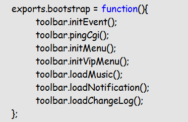
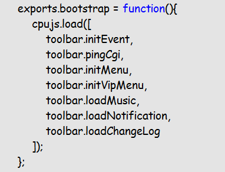
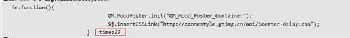
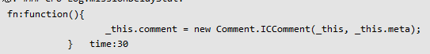
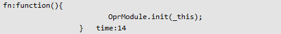
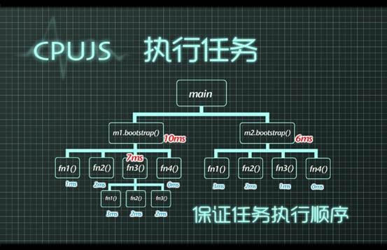

CPUJS的任务调度器
一、 如何使用任务调度器
任务调度器主要的对外接口有两个，即cpujs.load和cpujs.fastLoad，具体使用如下：
require([' /cpu'],function(cpujs){
cpujs.bootstrap();
cpujs.load(***);//加载一个任务
cpujs.fastLoad(***);//快速加载一个任务，享受最高的执行优先级
cpujs.load(
[fn1,fn2,fn3]
);//加载一批任务，并按序执行，不需要单独传参时可以用这种
cpujs.load(fn,arguments);//加载一个任务，并把arguments传给这个函数
});
可以通过cpujs.Config. TM_MAX_CPU参数来设置任务调度器的阀值，这个阀值是让任务调度器在调度任务执行的过程中确保CPU不要超过的百分比，阀值越大，调度器执行任务速度越快，页面CPU越高，越容易导致用户卡，所以建议这个阀值不要超过50。
二、 代码需要做什么改造才可以更好地接入任务调度器
为了使用任务调度，程序的代码只需要相应做很少的改动：
1）
避免让同步执行的代码分散在各处，而是收归到一个地方，然后用任务调度器按需load进来。
例如将原来到处运行的代码收在一个地方：

然后改为用cpujs.load来加载这些任务：

这样写的好处是使得整个模块的调度看起来非常清晰，方便维护和进行优化。
2）
少用this，或是及时做好保存，因为加载到任务调度器里面的任务是被异步执行的，这点要注意。
3）
从大粒度开始加载进任务调度器，如果发现某个任务单次运行开销就有几十ms之多，那就意味着这个任务粒度太大，需要在任务里面将任务分解，再分别加载到任务调度器里面。
三、 任务调度器的log功能
为了帮助大家更好地控制任务的粒度，在任务调度器里面会统计单次任务执行所需的时间开销，并log出来。
为了让大家自己可以控制粒度，提供了CPUJS.Config. TM_MISSION_DELAY这个配置供大家设置。
这个配置是用来设置单次运行超过多少ms的任务要被log出来，默认是5ms。
例如：
这个表示监控到这个任务当次执行时间为27ms，依此类推。



当知道这些任务单次运行超标，我们就可以有针对性地对其进行优化了。
四、 使用任务调度器之后对源代码的改造顺序
所以并不是需要每个函数都需要用cpujs.load进来，而是应该自顶向下，先从最大的部分着手，再从log的反馈里进一步分解粒度，以下面这个为例：
一个程序main包含两个模块，m1和m2，改造顺序是这样的：
1、
先在main里面分别把m1.bootstrap和m2.bootstrap加载进任务调度器
2、
从log发现这个两个分别运行时长是10ms和6ms，都大于5ms（这个是默认阀值）
3、
先看m1.bootstrap里面的函数，有4个，分别都load到任务调度器里面
4、
发现fn3这个函数是7ms，超标，继续深入进去，在把他里面的3个函数再加载到任务调度器里面
5、
对m2也是同样的思路进行处理即可

回过头我们可以看到cpujs的任务调度器其实最终这些代码的载入顺序是这样子的（以m1为例）：
1、
m1.bootstrap()
2、
m1.bootstrap->fn1()
3、
m1.bootstrap->fn2()
4、
m1.bootstrap->fn3()
5、
m1.bootstrap->fn3->fn1()
6、
m1.bootstrap->fn3->fn2()
7、
m1.bootstrap->fn3->fn3()
8、
m1.bootstrap->fn4()
可见任务调度器是可以保证逻辑运行的顺序的。
至于代码级的JS性能优化，则大家可以参考类似《高性能Javascript》等书籍或是Mozilla的JS引擎工程师David的文章《Know Your Engines: How to Make Your JavaScript Fast》